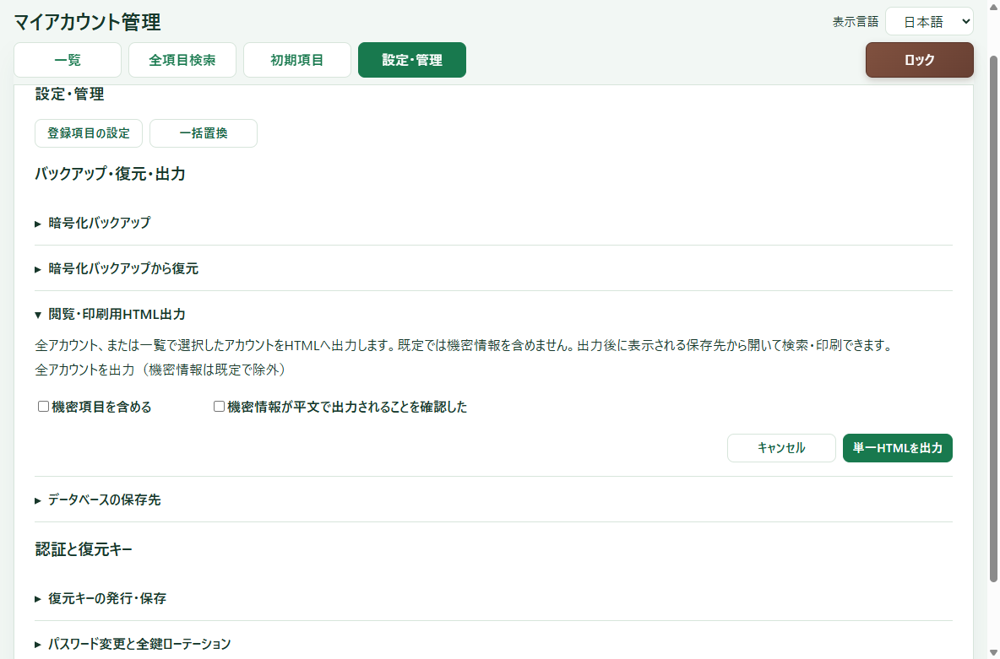
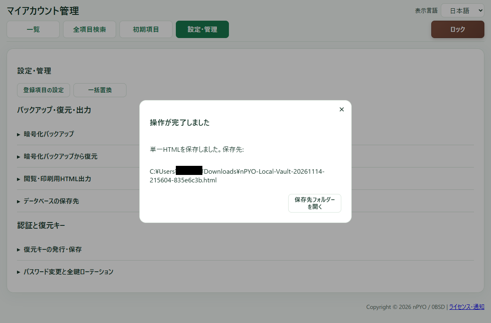
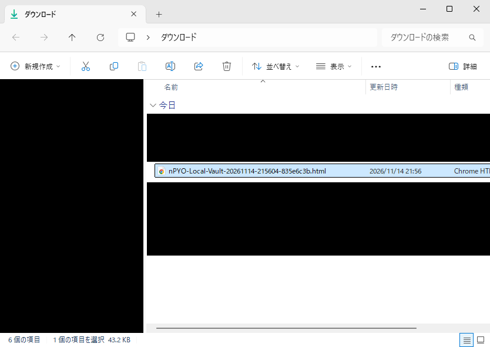
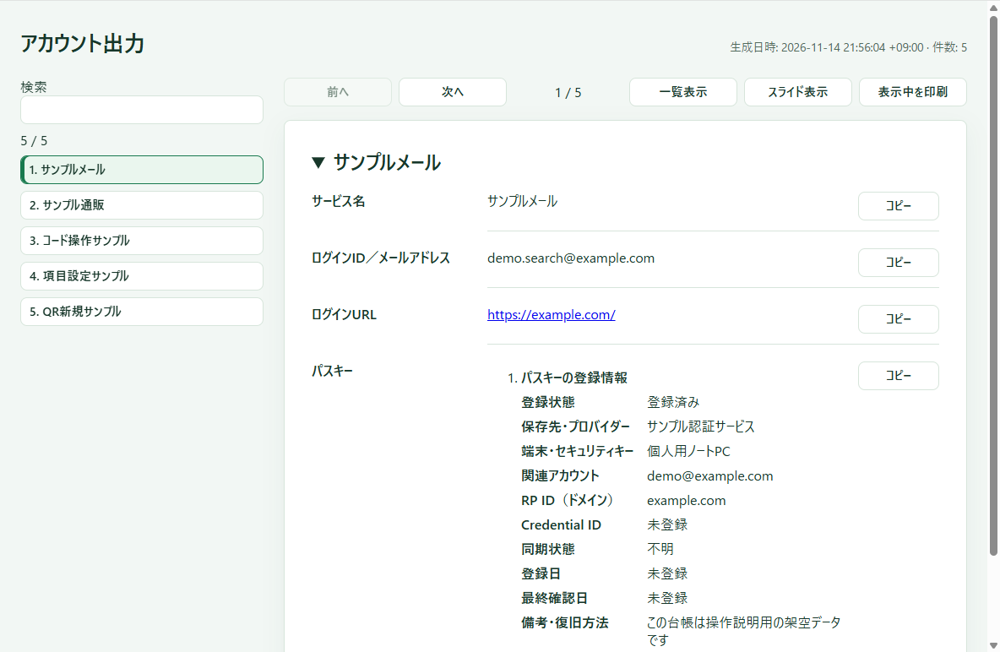
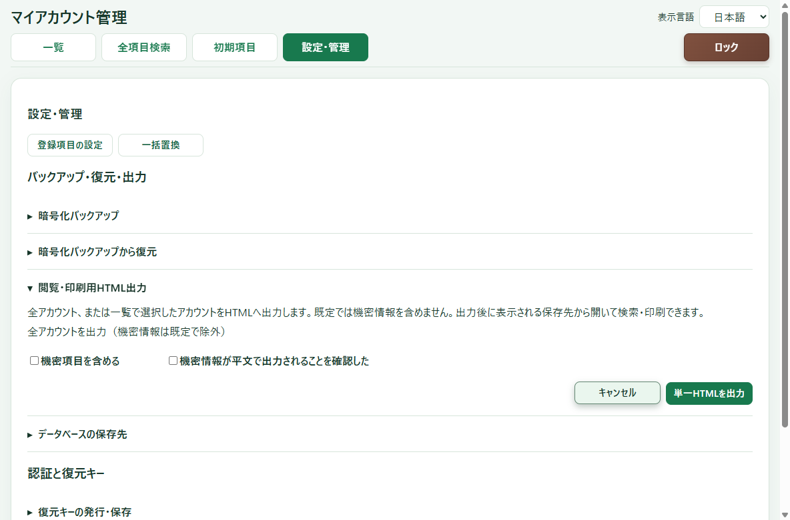
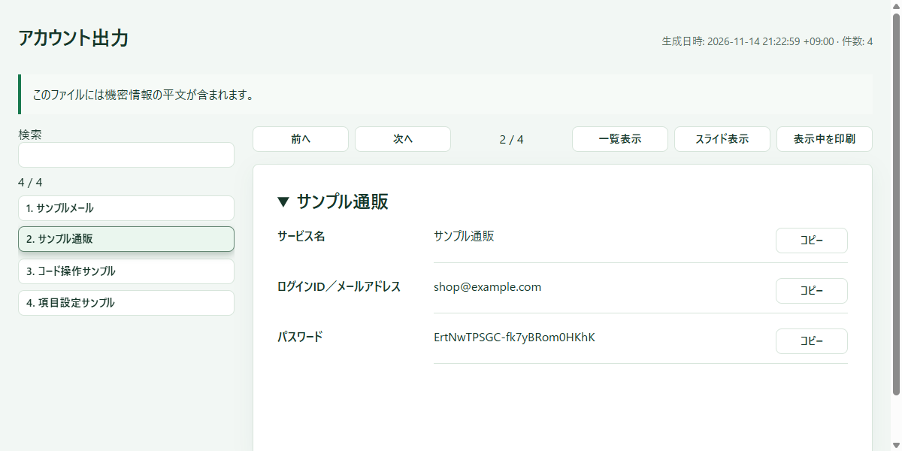
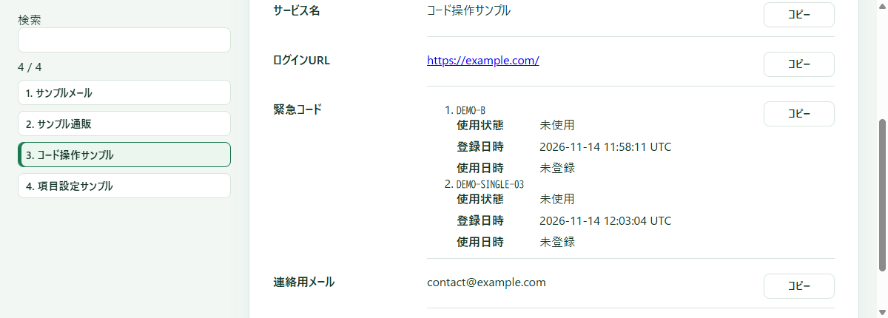

41全件をHTML出力
登録済みアカウントを、ブラウザーで読める単一HTMLへ出力します。
手順一覧を開く（10手順）
機密項目を除いて出力する
1機密情報を除いて全件を出力する
［設定・管理］の［閲覧・印刷用HTML出力］を開き、機密項目を含めるチェックをオフのまま［単一HTMLを出力］を押します。

2保存先を確認する
保存完了とファイル名を確認します。［保存先フォルダーを開く］から生成されたHTMLを探せます。

3生成されたファイルを開く
保存先フォルダーで、完了通知と同じファイル名のHTMLを開きます。

4件数と生成日時を確認する
ブラウザーで開き、生成日時と件数を確認します。この例は機密項目を除いた5件です。

機密項目を含めて出力する
5機密項目も出す場合の準備
別の4件の例で、機密項目を含める手順を示します。必要な場合だけ選び、出力先の安全性を先に確認してください。

6［機密項目を含める］を選ぶ
パスワードなどもHTMLの対象になります。
7平文出力を確認する
内容を理解したうえで確認欄にチェックし、［単一HTMLを出力］を押します。
8出力結果の警告と件数を確認する
生成したHTMLを開きます。機密情報の平文を含む警告が表示されます。

9機密値も含まれることを理解する
この例ではサンプル通販の架空パスワードも平文で表示されています。

10コードなどの出力内容も確認する
コード操作サンプルでは緊急コードと機密指定したメールも含まれます。
